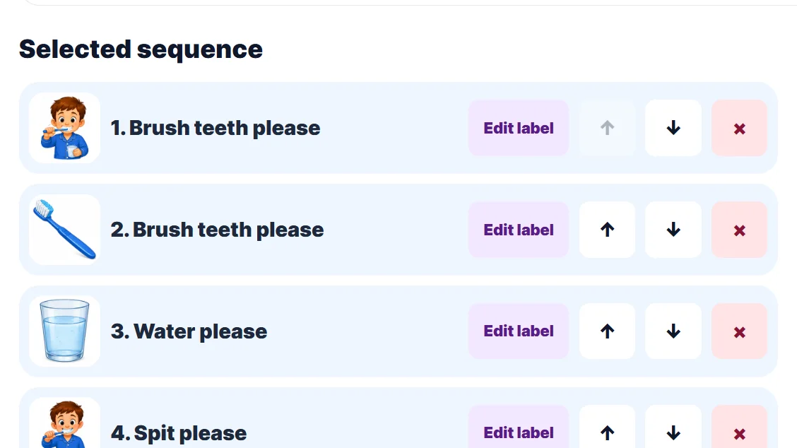
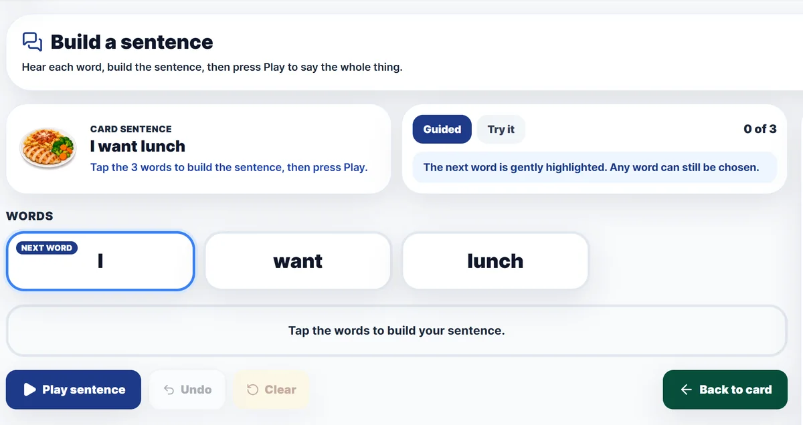
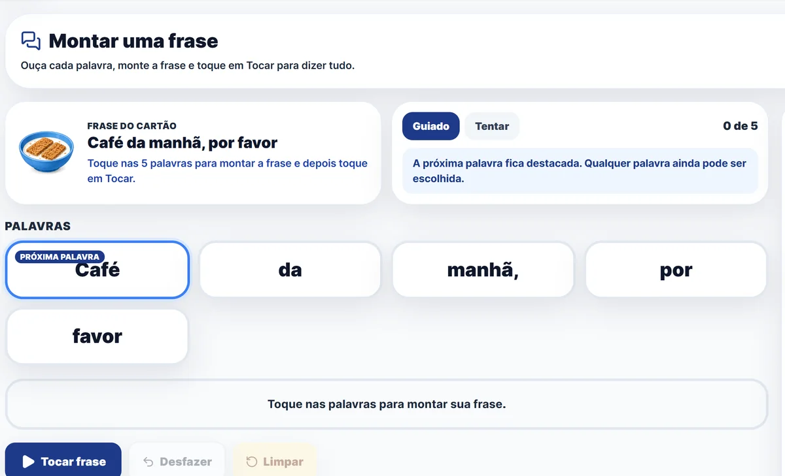
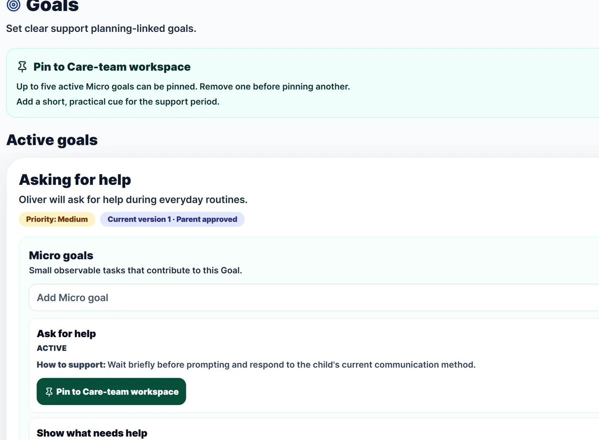
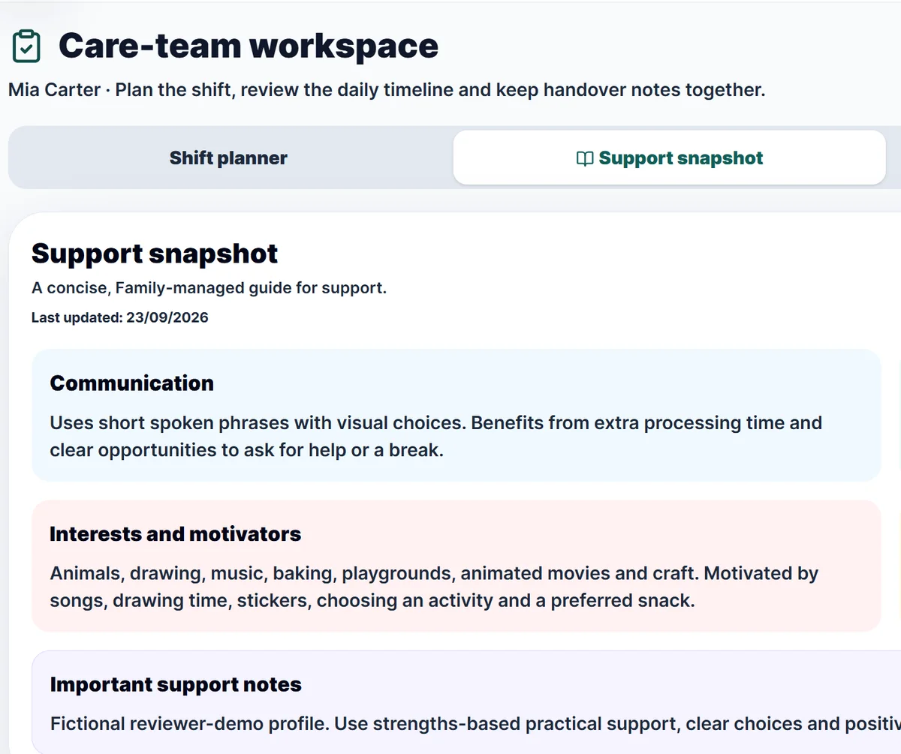
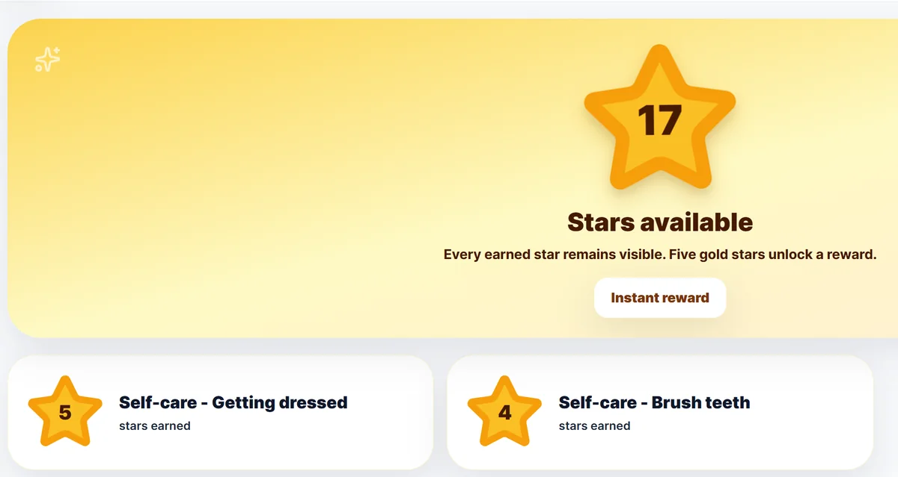
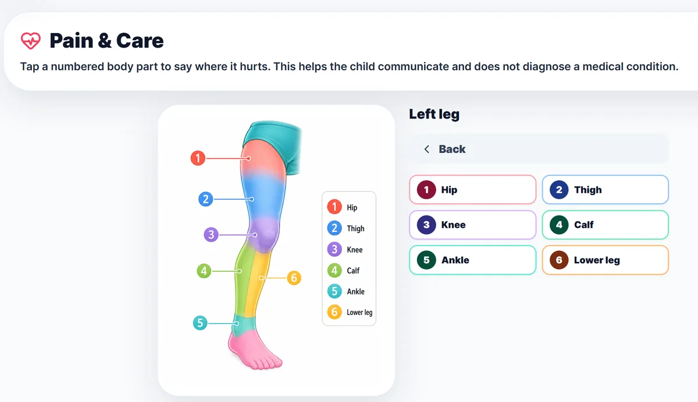
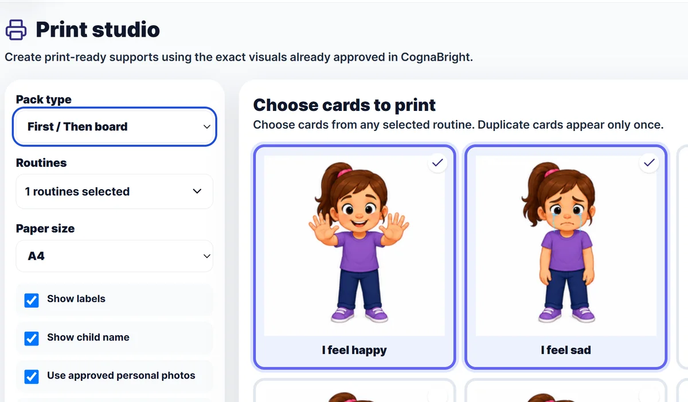

Routine Builder
Build the sequence.
Choose familiar visual steps, put them in order and save the routine for the person you support.
CognaBright is here
Visual routines, functional communication, multilingual support and connected everyday support for children, adolescents and adults with disability.
Explore featuresLaunch video
See how CognaBright brings visual routines, functional communication, multilingual support, meaningful goals and connected family-professional support together around everyday life.
Every day brings routines, transitions and moments when clearer support can make a real difference.
Many families already use visual supports through therapy and school. CognaBright brings them together, with personalised visual routines built from clear, familiar steps.
Run routines one step at a time, and record how each step was completed.
Communication is more than speech. Visual choices and simple sentence building support requests, needs, asking for help and everyday messages.
Visual boards put practical choices and communication within easy reach, in the moment.
Multilingual families deserve multilingual support. Read, and where available hear, cards in a supported everyday language.
Connect routines to meaningful goals, while structured evidence helps show patterns in participation and support over time.
Bring goals, routines and observations together, and keep families and professionals connected, with access remaining a deliberate choice around the person and family.
Rewards recognise participation, effort and everyday achievements in ways that matter to the person.
Pain and Care gives a visual way to show where something doesn't feel right.
And familiar visuals can be printed for home, school and community.
Visual, multilingual, practical and connected. One person, one support circle. CognaBright: visual support for everyday life.
Visual routines
Create personalised visual routines for the activities that make up a day, built from clear, familiar steps.
Routine Builder
Choose familiar visual steps, put them in order and save the routine for the person you support.
Guided Session
Work through the routine one step at a time and record how each step was completed and what support was used.
Visual routines can make activities easier to understand and support participation — at the person's own pace.

Functional communication
Visual choices, communication boards and simple sentence building support everyday communication — in the way that works for the person.
CognaBright is another practical visual communication support. It works alongside the AAC, therapy and school supports a person already uses, and does not replace them.

Multilingual communication
See it. Read it. Hear it. Communicate it.
In the language that works for them.
Use cards and visual content in nine supported languages, and hear cards read aloud in the selected language where a voice is available on the device.
For multilingual families, communication can happen in the familiar languages used at home and in the community — at the person's own pace.
Multilingual support is for everyday communication, not language lessons.

Goals
Describe what matters to the person, then break it into micro goals — practical, observable steps that connect to daily routines.
Example goal
Asking for help
Structured evidence and analytics help show patterns in participation and support over time. Goals can be pinned to the Care-team Workspace so everyone supporting the person sees the same priorities.

Connected support
Professionals remain part of the person's support circle. CognaBright helps practical information connect with everyday life — at home, at school, in the community and in professional support.
Brings the person's current plan, pinned goals, daily timeline, observations and handover notes together in one shared place for the people supporting them day to day.
Recommendations and conversations between families and the organisations and professionals working with them. The family reviews each recommendation and decides whether to accept it.

Your support circle. Your choices.
An organisation can access a child's information only after a parent or guardian reviews and accepts its access request. Families can see active and previous connections, and access can be revoked.
Rewards
Make achievement visible. Stars, Token Cards and Prize memory recognise participation, effort and everyday achievements in ways that matter to the person.
Rewards are built around the person's own preferences — a way to celebrate together, not a way to control behaviour.

Pain & Care
Visual support can help communicate it. Pain & Care gives a visual way to show pain, discomfort or where something doesn't feel right — by choosing a part of the body and how it feels.
Pain & Care helps a person communicate. It does not diagnose a condition, provide medical advice or replace healthcare professionals. For urgent or worsening health concerns, contact the appropriate medical or emergency service.

Print Studio
Create print-ready visual supports with the familiar CognaBright visuals the person already knows — for home, school and the community.
Digital support, carried into everyday environments.

Different ways to use CognaBright
CognaBright is designed for children, adolescents and adults with disability, and for the families and professionals who support them.
For families
Build visual routines, communication supports and goals around the person you support, and decide which organisations are connected.
Explore CognaBright for families →For professionals
Therapists, educators and support workers connect through their organisation's CognaBright workspace — with the family's consent — and share recommendations through Care-team Connect.
See how professionals connect →For organisations
Support circles, Routine Studio, People & teams, goals, evidence and analytics for disability, allied-health, education and community organisations.
Explore organisation plans →Start with visual routines, functional communication and connected support today — on the web, on your phone, tablet or computer.